Software developing company
and a partner network.
Automat Berlin is a software development company. We are senior software engineers, experienced agile practitioners and we represent a valuable partner network.
For our clients, we set up custom expert teams, provide the relevant toolchain, and develop software artifacts. Learn more at automat_factory.
With our partners, we build and contribute to open source software and are engaged in communities with a focus on ecosystems of programmable communications. Find out more in automat_workshop
//factory
PWA on client-side and microservices in the backend on a serverless hosting environment - if that does not mean anything to you we are here to help. We analyze your business requirements, consult you on technology and development, and deliver a tailored solution.

Automat Berlin offers full stack application development.
We design and develop in short iterations transparently and according to your requirements. In doing so we rely on most recent technology stacks and apply a high level of automation in the overall software lifecycle. If possible, we generate artifacts to increase standardization and improve software quality. Our teams always consist of at least two developers since we believe in pair programming, test-driven development and the value of code review. We work with agile methodologies and continuous delivery based on time and materials engagements.
Scaling delivery teams with managed nearshoring
In case your development initiative becomes bigger we reliably scale our tech teams with our longtime trusted development partners in Poland and Turkey. This enables us to start small and adjust team size and expertise ranges according to project needs. Delivery responsibility and team lead stay in our hands, which lets you benefit from all the nearshoring advantages at a reasonable cost without taking the associated risks. We provide continuous delivery and operations on Amazon Web Services, Google Cloud Platform, and Microsoft Azure.
Your future delivery team - company building for Tech
You do not have a development team yet, but want to immediately start building things and set up your team in parallel? We will support you and provide an external team, start developing immediately and built a joint tech team together. As soon as possible the work will be handed over gradually. Once completed we phase out and you are in full control of the toolchain, code base, and operations.
Extending the VoIP stack
Contributing to free and open-source software in the communications domain is our passion. Whether it is SIP, RTC or hybrid stacks, audio, video or messaging, we have seen it all and work on various projects mainly to enable the developer community to consume existing VoIP infrastructures more efficiently. Test applications, mobile SDKs and data syncing solutions between different clients are examples, see our GitHub for more details.
Open ecosystem for communication services
We embrace the so-called Communication platform as a Service (CPaaS) approach and develop easy to handle code bridging different providers. Least cost scenarios, enhanced geo-coverage, and service/provider interoperability are still difficult to achieve by using just one CPaaS/trunk provider, hence we work on the easy use of multiple accounts. We very much like Node-RED for doing this, see our Flows here.
Transforming the Telco industry
The majority of users still communicate with services from the carrier industry. Legacy telephony and SMS are under pressure, and difficult to innovate. Since we are an experienced group of Telco engineers who know both sides of the coin we support R&D projects in Telco industry towards a modern operational model, enabling innovation to go with the speed of software, not infrastructure development.
//workshop